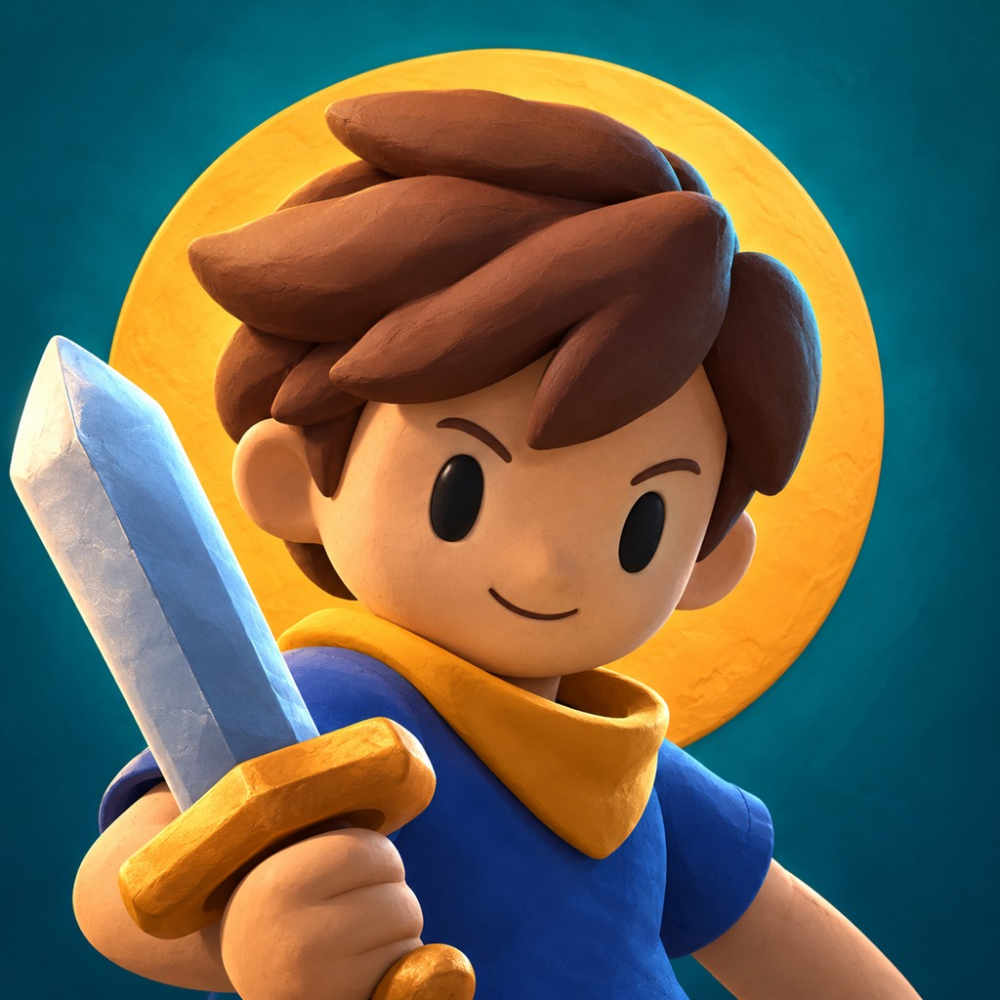

Character in
every detail.
Soft shapes, warm colors, and a world that looks sculpted by hand.
By Remedion Games · In development for Android
CLAY HERO
A little clay hero. A world full of adventure. And you right in the middle.
Handcrafted looks. Big heroic moments.

A world shaped by hand
Clay Hero brings a playful clay world and a sword-swinging adventure to your phone. It is our next passion project.
Soft shapes, warm colors, and a world that looks sculpted by hand.
Take on enemies with a sword and elemental abilities.
In the closed test, tell us how the controls, combat, and game feel to you.
Your first step into the adventure
The closed playtest is available on Android only. Help us improve Clay Hero. Send us your Gmail address using the form, and we’ll get in touch when we can invite you to the test.
Signing up does not grant immediate access. You will need a separate Google Play invitation to join the test.
Also by Remedion Games
Discover FrogSlap, its game guide, and stories from its chaotic world.
Explore FrogSlap
An independent studio from Austria.
I’m René, the developer behind Remedion Games. Clay Hero is my next adventure, shaped by hard work and your support.
Meet the studio